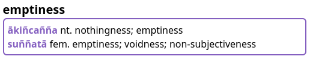

Добро пожаловать в Цифровой Пали Словарь
DPD - это богатый возможностями словарь палийского языка на английском и русском, который работает в GoldenDict, MDict и Kindle, или в любом другом приложении, поддерживающем эти форматы.
Скачайте последнюю версию с этой страницы на GitHub.
Это работа в процессе, предоставленная для тестирования и обратной связи.
Часть информации в словаре была переведена автоматически и еще не корректировалась вручную, свяжитесь с нами если хотите поучаствовать в процессе.
Вот удобное руководство по некоторым возможностям, доступным в DPD.
Прежде всего, вам нужно установить и настроить GoldenDict или MDict на вашем компьютере (Win / Mac / iOS / Linux / Android) или обновить раз в месяц, если вы уже установили их.
Затем можно настроить горячую клавишу, если вы используете Windows или Mac, или попробовать всплывающее окно, если вы используете Linux. Это позволит вам щелкнуть любое слово в любом тексте на пали, и автоматически открыть его в GoldenDict.
Есть некоторые продвинутые функции для GoldenDict, которые могут быть полезны для вас.
Пока вы занимаетесь этим, вот еще несколько словарей на пали и санскрите для установки в GoldenDict или MDict. Среди них Критический Пали Словарь и Объединенный Словарь Симсапа, который содержит PTS, DPPN и NCPED и другие.
Если вы заметили ошибку в DPD или заметили что-то отсутствующее, пожалуйста сообщите об этом. Обычно на это уходит менее минуты.
Если у вас есть какие-то яркие идеи, чтобы сделать этот словарь еще лучше, или вы хотели бы принять участие в проекте, пожалуйста, свяжитесь с нами.
Цифровой Пали Словарь распространяется под лицензией Атрибуция-Некоммерчески 4.0 Всемирная.

Особенности
DPD содержит четыре различных словаря
Словарь палийского языка на русский (зеленый)

Словарь корней палийского языка (оранжевый)

Для получения дополнительной информации нажмите здесь
Словарь русского на палийский язык (фиолетовый)

Словарь сокращений и помощи (зеленый)

Два дополнительных словаря
Существует два дополнительных словарных набора, которые работают в связке с DPD. Первый посвящен разбору составных слов и разложению сложных слов, а второй - грамматический словарь, который может объяснить падеж каждого измененного слова в тексте. Щелкните по ссылкам, чтобы узнать больше.
DPD распознает 1,5 миллиона уникальных измененных форм слов палийского языка
Когда вы выбираете слово в тексте на палийском языке и нажимаете сочетание клавиш, DPD автоматически определяет все главные слова, к которым принадлежит эта измененная форма. Например, клик по takkarassa автоматически откроет takkara.

100% Распознавание словаря в этих книгах
DPD распознает все слова, как в Chaṭṭha Saṅgāyana Tipiṭaka, так и в Mahāsaṅgīti издании на Sutta Central, включая все сложные слова и соединения, в следующих книгах:
Виная: Pārājikapāḷi , Pācittiyapāḷi Сутты: Все четыре Никаи Кхуддака Никая: Khuddakapāṭha, Dhammapada, Udāna, Itivuttaka, Suttanipāta, Theragāthā Вплоть до: Therigāthā
Кликайте по всему
Одна из значительных особенностей GoldenDict - это возможность щелкнуть по любому слову, чтобы открыть определение этого слова. Это создает бесконечное пространство для изучения языка.
Компактное представление
Вся важная информация на палийском языке представлена в одной компактной строке, доступной на первый взгляд, а более подробная информация доступна при нажатии кнопок.

Основная информация включает часть речи, падеж, значение, буквальное значение и упрощенную конструкцию.
Система нумерации
Если слова с несколькими значениями происходят из разных источников, их нумерация будет отражать это.

В приведенном выше примере 1.1 и 1.2 оба связаны с санскритским śara, в то время как 2.1 происходит от корня √sar (издавать звук), санскритское svara.
Степень завершенности данных о словах
Поскольку DPD находится в процессе выполнения, полезно знать, насколько полны данные о слове. Это указывается серым значком (✓~✗) после записи.

✓ серая галочка означает, что данные о слове в основном завершены с контекстуальным значением, грамматической информацией, примерами из сутт и другой соответствующей информацией.

~ серая волнистая линия означает, что данные о слове частично завершены с контекстуальным значением и грамматической конструкцией, но минимальной другой информацией.

✗ серый крестик означает, что данные о слове все еще находятся в процессе создания и содержат только таблицу измененных форм, таблицу частотности и очень базовую информацию.
Перевод нейронными сетями
Важно отметить, что часть информации в словаре была частично переведена с использованием технологий искусственного интеллекта, нейронными сетями GPT 4o. Этот процесс позволяет нам расширять словарь и обновлять его с более высокой скоростью. Однако, такие переводы требуют дополнительной проверки для обеспечения точности и достоверности информации. Поэтому, записи, полученные с помощью искусственного интеллекта, помечены как [пер. ИИ]. Если вы обнаружите явно некорректный перевод ИИ, пожалуйста, сообщите нам через Google форму.
Грамматика
Щелкните кнопку грамматика, чтобы получить более подробную грамматическую информацию о слове.

Это включает информацию о корне, детальное образование, производное, фонетические изменения, составное слово, антонимы, синонимы, комментарий, неиндоарийские родственные слова, санскритские родственные слова и санскритский корень.

Если вы заметили ошибку, пожалуйста, нажмите ссылку, чтобы исправить ее.
Примеры
Щелкните кнопку примеры, чтобы увидеть соответствующие примеры из сутт, содержащие слово.

Если у вас есть лучший пример, пожалуйста, сообщите нам!
Склонение / Спряжение
Щелкните кнопку склонение или спряжение, чтобы увидеть все измененные формы слова.

Эта таблица автоматически генерируется с использованием системы основа + шаблон, например, anicc + o. Неправильные склонения имеют свои собственные уникальные таблицы.
Измененные формы, не найденные в тексте Chaṭṭha Saṅgāyana, отмечены серым.
Семья корня
Щелкните кнопку семья корня, чтобы увидеть все слова, которые имеют тот же префикс + корень.

Эта информация уникальна для DPD и основана на детальном изучении системы корней палийского и санскритского языков. Это отлично подходит для изучения тонких оттенков значений, которые может показывать комбинация корня + префикса.
Семья слова
Щелкните кнопку семья слова, чтобы увидеть все связанные слова, которые не происходят от корня, а созданы из первичного слова с использованием префиксов и суффиксов.

Семья составного
Щелкните кнопку семья составного, чтобы увидеть коллекцию всех составных слов, которые содержат определенное слово.

Если само заглавное слово является составным, будут перечислены все семьи слов компонентов.

Частотность слова
Щелкните кнопку частота, чтобы увидеть карту интенсивности того, где и как часто слово встречается в тексте Chaṭṭha Saṅgāyana.

Нажмите здесь для получения более подробной информации об этой интересной функции.
Английско-палийский словарь
Щелкнув любое русское слово в GoldenDict, теперь можно получить доступ к русско-палийскому словарю, который выводит список точных совпадений.

Или вы можете использовать поиск по слову, чтобы найти слово, фразу или идиому. В раскрывающемся списке будут отображаться все возможные варианты в процессе ввода слова для поиска.

Или вы можете выделить любое слово, фразу или идиому и использовать горячую клавишу.

Эта функция предназначена для начинающих, которые испытывают трудности с переводом с русского на палийский, и более продвинутых студентов, изучающих общение на палийском языке.
Обратная связь
Один из самых важных аспектов DPD - это обратная связь. Когда вы замечаете ошибку, пожалуйста, нажмите ссылку, чтобы исправить ее. Это открывает форму Google, которая автоматически заполняется заголовком.

Это обычно занимает менее минуты, чтобы зарегистрировать ошибку, и помогает улучшить качество словаря для всех. Если у вас есть другие вопросы или комментарии, пожалуйста, сообщите нам!
Ссылки на Википедию
Все цветы, деревья, растения и необычные животные содержат ссылку на статью Википедии для получения более подробной информации по теме. Индийские растения часто используются в ранних буддийских сравнениях, и одна картинка стоит тысячи слов.

Можно быстро переключить язык статьи нажав на language и выбрав Русский.
Шрифты
Если вы предпочитаете шрифт без засечек, установите Noto Sans, он хорошо работает с диакритическими знаками Пали. Если вы предпочитаете шрифт с засечками, установите Deja Vu Serif или Verajja Serif, специально созданный шрифт для текстов на Пали.
Достаточно теории, далее читайте как установить и настроить GoldenDict на вашем компьютере (Windows / Mac / Linux / Android), или обновить его раз в месяц, если он уже установлен.
Словарь корней
В DPD включен подробный Словарь корней Пали. Нажатие на любой корень перенесет вас на специальную страницу, содержащую всю информацию о корне.

Информация о корне
Информация о корне содержит подробную информацию из классических грамматик.

Матрица корней
Матрица корней перечисляет каждое слово, происходящее от корня, упорядоченное по частям речи (глаголы, причастия, существительные, прилагательные и наречия) и по наклонениям глаголов (побудительный, пассивный, интенсивный, деноминативный и т. д.).

Результатом является всесторонняя таблица того, как корень появляется в текстах Пали, полезная как для учителей, так и для студентов.
Семьи корней
Каждая семья корня содержит каждое слово с тем же префиксом и корнем.

Эти семьи корней очень полезны для понимания диапазона тонких значений, которые комбинация префикса и корня производит.
Частота слов
Нажатие кнопки частота даст вам мгновенный обзор того, где и как часто слово может встречаться в тексте Chaṭṭha Saṅgāyana.

Эти карты частоты слов могут предоставить мгновенный доступ к картинке использования слов в различных слоях текстов и стать отправной точкой для дальнейшего изучения того, как слова на пали и связанные с ними концепции развивались со временем.
Соответствия
Числа представляют точные совпадения между заголовком и всеми его склонениями в разделе текста.
Для заголовков в определенном падеже (например, мужской местный единственное число, желательное рефлексивное 3-е лицо множественного числа) будет учитываться только точный заголовок, а не какие-либо другие связанные склонения.
Цвета являются визуальным представлением тех же данных: темно-синий цвет означает более высокую частоту слов, в то время как более светлые оттенки синего цвета показывают более низкое количество встречаемости.
Несоответствия
Частичные совпадения, как в составных словах, так и в сандхи, не учитываются.
Тире "-" указывает на 0 экземпляров слова в этом разделе.
Ложные срабатывания
Все совпадающие склонения учитываются, что приводит к ложным срабатываниям для слов с идентичными склонениями, например, assu (сред. имен. ед. для "слеза") и assu (желат 3е мн. для "они могли бы быть").
Ниже приведено объяснение некоторых особенностей разделов текстов Chaṭṭha Saṅgāyana, представленных здесь.
Vinaya Ṭīkā

Некоторые из подкомментариев Винаи (Vinaya Ṭīkā) содержат перекрывающийся материал, который нельзя сразу отнести к определенной книге Винаи, поэтому все Vinaya Ṭīkā перечислены в разделе Vinaya Pārājika.
Этот раздел включает в себя Sāratthadīpanī-ṭīkā, Dvemātikāpāḷi, Vinayasaṅgaha-aṭṭhakathā, Vajirabuddhi-ṭīkā, Vimativinodanī-ṭīkā, Vinayālaṅkāra-ṭīkā, Kaṅkhāvitaraṇīpurāṇa-ṭīkā, Vinayavinicchaya-uttaravinicchaya, Vinayavinicchaya-ṭīkā, Pācityādiyojanāpāḷi и Khuddasikkhā-mūlasikkhā.
Кхуддака Никая

Кхуддака Никая содержит много материала, который отличается не только по языковому стилю, но и по смысловому содержанию. Он был разделен на три соответствующих раздела для удобства ссылок:
1. Раннее собрание мудрости:
Эти книги в основном согласуются с четырьмя никаями Сутта Питаки по языку и стилю.
Khuddakapāṭhapāḷi, Dhammapadapāḷi, Udānapāḷi, Itivuttakapāḷi, Suttanipātapāḷi, Theragāthāpāḷi, Therīgāthāpāḷi, Jātakapāḷi-1, Jātakapāḷi-2.
Обратите внимание, что есть aṭṭhakathā, но нет ṭīkā для всех этих книг
2. Позднее собрание историй:
Эти поздние книги имеют легко узнаваемый цветастый стиль стиха и религиозное содержание.
Vimānavatthupāḷi, Petavatthupāḷi, Apadānapāḷi-1, Apadānapāḷi-2, Buddhavaṃsapāḷi, Cariyāpiṭakapāḷi.
Снова, для этих книг есть aṭṭhakathā, но нет ṭīkā
3. Комментарии и тексты Абхидхаммы:
Эти поздние книги содержат самый ранний известный толковательный материал и начала анализа в стиле Абхидхаммы.
Mahāniddesapāḷi, Cūḷaniddesapāḷi, Paṭisambhidām
aggapāḷi, Nettippakaraṇapāḷi, Milindapañhapāḷi, Peṭakopadesapāḷi.
Благодарим Дост. Анандаджоти с Ancient Buddhist Texts за его предложения относительно разделения Кхуддака Никая.
Aññā
Раздел Aññā содержит огромный объем материала с комментариев и до современности.

Aññā Abhidhamma

Все книги, которые не связаны непосредственно с 7 книгами Абхидхамма Питаки, включены в Aññā Abhidhamma. Этот раздел включает в себя резюме и обзоры: Abhidhammāvatāro-nāmarūpaparicchedo, широко известные Abhidhammatthasaṅgaho, Abhidhammāvatāra-purāṇaṭīkā, и Abhidhammamātikāpāḷi.
Aññā Visuddhimagga

Висуддхимагга включена в раздел Aññā под aṭṭhakathā, а его комментарий под ṭīkā.
Разбор составных слов и разделение сандхи
Деконструктор DPD теперь доступен как отдельный словарь.
В настоящее время он содержит около 700 000 разобранных слов, охватывая все книги в тексте Chaṭṭha Saṅgāyana, mūla, aṭṭhakathā, ṭīkā и aññā, а также все палийские тексты на Sutta Central. Это число будет уменьшаться по мере добавления новых сочетаний в DPD.

Как установить
Скачайте последнюю версию деконструктора DPD для GoldenDict или MDict с этой страницы на GitHub и поместите его в ту же папку, что и DPD.
Немного информации
Сандхи-сочетания - это самое большое препятствие для любого начинающего изучающего палийский язык. Правила сандхи не являются абсолютными правилами, а только возможностями морфологических изменений в зависимости от контекста. Эти правила сложны и трудны в понимании для начинающего.
Ситуация только усугубляется в комментариях, где не редко встречаются чрезвычайно длинные составные слова, включая такие гиганты, как avippavāsasammutisanthatasammutibhattuddesakasenāsanaggāhāpakabhaṇḍāgārikacīvarappaṭiggāhakayāgubhājakaphalabhājakakhajjabhājakaappamattakavissajjakasāṭiyaggāhapakapattaggāhāpakaārāmikapesakasāmaṇerapesakasammutīti, bhattuddesakasenāsanaggāhāpakabhaṇḍāgārikacīvarapaṭiggāhakacīvarabhājanakayāgubhājanakaphalabhājanakakhajjabhājanakaappamattakavissajjakasāṭiyaggāhāpakapattaggāhāpakaārāmikapesakasāmaṇerapesakasammutīnaṃ и āsavavippayuttasāsavasaṃyojanavippayuttasaṃyojaniyaganthavippayuttaganthaniyanīvaraṇavippayuttanīvaraṇiyaparāmāsavippayuttaparāmaṭṭhakilesavippayuttasaṅkilesikapariyāpannasauttaradukāta.
Сандхи - самое большое препятствие, с которым сталкиваются все формы вычислительной лингвистики, связанные с палийским каноном. В настоящее время это препятствует любому реальному развитию в этой области.
Никто еще не нашел удовлетворительного решения этой задачи.
Единственное текущее решение, которое в какой-то мере полезно, - это функция анализа DPR, которая часто неправильна и вводит в заблуждение столько же, сколько и правильна. По-видимому, используемый ею метод - это система замен регулярных выражений для удаления склонений и сокращения составных слов до словарных слов.
Новый подход
Один из полезных продуктов Цифрового Словаря Пали - это список склонений для каждого слова в словаре. Вместе с набором правил трансформации букв этот список был использован для создания нового алгоритма разделения сандхи.
Это все еще в процессе и далеко не идеально - для понимания контекста всегда требуется интеллект, - но это лучше, чем все, что существует в настоящее время, давая более точные результаты и, самое главное, меньше ложных срабатываний.
Например, если вы откроете bahalamadhukatelanāgabalapicchillādīnaṃ в DPD, он покажет разбиение, по которому можно перейти к соответствующим словам.

Грамматический словарь
Это очень полезный побратим DPD, который выполняет одну простую задачу.
Он отображает все возможные части речи и грамматическую информацию для любого слова, найденного в текстах на пали, или в составах слов.

Если вы, как и мы, вероятно, не знаете наизусть таблицы спряжения возвратных глаголов. Нет проблем, Грамматический словарь знает все свои таблицы наизусть.

(Поможет ли это или помешает студентам палийского языка, пока неизвестно : )
Как установить
Скачайте последнюю версию Грамматического словаря DPD для GoldenDict или MDict с этой страницы на GitHub и поместите его в ту же папку, что и DPD.
Tipitaka Pali Reader
Tipitaka Pali Reader - отличное новое приложение для чтения палийских текстов, разрабатываемое Дост. Субхути и Дост. Паньяджаджа в Мьянме. Дополнительную информацию о TPR можно найти на этом веб-сайте.
TPR доступен для всех операционных систем и устройств. Загрузите последнюю версию для Windows, Mac, Linux, iOS и Android с этой страницы на GitHub.
Легковесная версия DPD доступна внутри приложения Tipitaka Pali Reader. Она содержит только грамматическую информацию для каждого слова, без прочих кнопок.
Чтобы открыть слово в словаре, просто щелкните по нему, и откроется словарь. TPR использует ту же систему для распознавания измененных форм и сандхи, что и DPD, поэтому будут отображены только правильные возможности.

Чтобы увидеть подробную грамматическую информацию, щелкните по маленькой стрелке на записи в словаре, и появится больше информации.

Грамматический словарь DPD также включен для отображения возможных склонений и спряжений слова.

Получите последнюю версию DPD
Tipitaka Pali Reader позволяет вам загрузить различные дополнения. Сюда входят словари на других языках, построчные переводы на английский язык с SuttaCentral и книги для чтения.
Чтобы получить самую последнюю версию DPD:
-
Откройте Меню и нажмите Настройки.
-
Нажмите Расширения.

- Выберите DPD. Это шестой элемент в списке.

- Файл загрузится, а затем установится сам.

- ПОЖАЛУЙСТА, ОБРАТИТЕ ВНИМАНИЕ! Подождите, пока вы снова не увидите меню Дополнений, это означает, что DPD установлен правильно.

Пока вы здесь, можете скачать что-то еще, что может быть вам полезно!
Бета-версия DPD
Я лично использую TPR для чтения палийских текстов, поэтому иногда нам нужна более актуальная версия DPD, чем ежемесячный релиз в день Упосатха. Чтобы получить самую последнюю / передовую / не проверенную / без каких-либо гарантий / бета-версию, прокрутите вниз до конца списка Дополнений, нажмите на DPD Beta и установите точно так же, как описано выше.

Веб-сайт Слов Будды
Легкая версия DPD теперь интегрирована на веб-сайте Слов Будды.
Это способствует очень комфортному чтению на Пали, с:
- английскими переводами слева
- текстами на Пали справа
- поиском в DPD просто наведением мыши на любое слово на Пали

Веб-сайт Слов Будды также доступен для загрузки и использования офлайн отсюда.
Simsapa Dhamma Reader
DPD интегрирован в Simsapa Dhamma Reader, очень мощное новое приложение для погружения в изучение Пали.
Симсапа стремится быть всё-в-одном приложением, которое содержит:
- CST4 Chaṭṭha Saṅgāyana Типитаку
- Тексты и переводы SuttaCentral
- Полный набор Пали словарей
- Переводы dhammatalks.org от Аджана Тханиссаро
- Множество электронных книг о Дхамме
- Санскритские тексты Gretil
- Санскритские словари
- И многое другое

(щелкните правой кнопкой мыши и откройте в новой вкладке, чтобы увидеть изображения в полном размере)
Каждый раз при выпуске новой версии DPD, Simsapa автоматически обновляется с последней информацией из базы данных DPD.
Для получения дополнительной информации и инструкций по установке посетите веб-сайт Simsapa.
Установка GoldenDict на Windows
Вкратце
- Скачайте последнюю версию DPD здесь.
- Установите свежую версию GoldenDict.
- В настройках укажите GoldenDict папку с DPD.
Вот видео, чтобы помочь вам с установкой на Windows от канала Learn Pali на Youtube.
Ниже приведены подробные anupubba инструкции в текстовом формате.
Установка GoldenDict
Скачайте последнюю версию GoldenDict NG с Github.
Перейдите в вашу папку Загрузки и дважды щелкните 6.7.0-GoldenDict-ng-Installer.exe.
Выберите ваш язык. Нажмите OK.

Нажмите Далее >.

Нажмите Принимаю.

Выберите место установки и нажмите Далее >.

Нажмите Установить.

Установка…

Нажмите Готово.

Скачать DPD
Скачайте последнюю версию Цифрового Словаря Пали с Github.
Создание папки GoldenDict
Рекомендуется создать легко доступную папку GoldenDict, например \Documents\GoldenDict.

Распаковка
Щелкните правой кнопкой мыши на файле .zip в папке Загрузки и выберите "Извлечь все".

Выберите папку \Documents\GoldenDict и нажмите Извлечь.

Теперь в \Documents\GoldenDict будет папка DPD.

Настройка GoldenDict
Запустите GoldenDict из меню Пуск.

Откройте Меню > Правка > Словари (клавиша F3).

Нажмите Добавить.

Перейдите в \Documents\GoldenDict и нажмите Выбрать папку.
Установите флажок Рекурсивно (это гарантирует добавление всех подпапок). И нажимите Пересканировать

Подождите, пока словарь будет проиндексирован.

Всё готово!
Можно почитать, как настроить горячую клавишу, чтобы вы могли щелкнуть на любое слово на пали в любом тексте и мгновенно открыть его в словаре.
Установка GoldenDict на Mac
Кратко
- Скачайте последнюю версию DPD здесь.
- Установите версию GoldenDict NG для Apple Silicon M1 и выше или Intel AMD64.
- В настройках направьте GoldenDict в папку DPD.
Ниже подробные инструкции anupubba.
Скачать GoldenDict
Если вы используете an Apple Silicon M1 или более позднюю версию, скачайте эту версию GoldenDict NG с GitHub.
Если вы используете Intel AMD64, скачайте эту версию GoldenDict NG с Github.
Установка GoldenDict
Дважды щелкните файл GoldenDict.dmg в папке Загрузки.
Дважды щелкните установщик.

Вероятно, вы получите предупреждение безопасности. Нажмите "Открыть в любом случае".

Нажмите "Отмена" и откройте "Настройки безопасности и конфиденциальности". Нажмите на замочек в левом нижнем углу. Затем выберите "Открыть в любом случае", и GoldenDict откроется. Нажмите "Открыть в любом случае".

Нажмите "Открыть" на следующем предупреждении безопасности.

Установка завершена.
Скачать DPD
Скачайте последнюю версию Цифрового Словаря Пали для GoldenDict с Github в вашу папку Загрузки.
Распаковка
Найдите файл .zip в папке Загрузки и распакуйте его.

Создание папки GoldenDict
Рекомендуется создать легко доступную папку GoldenDict, например /Documents/GoldenDict.

Скопируйте распакованную папку DPD в /Documents/GoldenDict.

Добавление словарей в GoldenDict
Запустите приложение GoldenDict.
Перейдите в Меню > Правка > Словари (Горячая клавиша F3).

Перейдите в Источники > Файлы. Нажмите Добавить.

Выберите папку /Documents/GoldenDict.

Установите флажок "Рекурсивно" √ (это гарантирует поиск во вложенных папках).

Нажмите "Пересканировать сейчас" или OK и подождите несколько моментов, пока словари индексируются.

Всё готово!
Можно почитать, как настроить горячую клавишу, чтобы вы могли щелкнуть по любому измененному слову Пали в любом тексте и немедленно открыть его в словаре.
Установка MDict на iOS
Вкратце
- Загрузите последнюю версию DPD для MDict (ru-dpd-mdict.mdx) здесь.
- Установите MDict из App Store.
- Переместите файл ru-dpd-mdict.mdx в папку MDict на вашем устройстве iOS.
Ниже приведены подробные инструкции anupubba.
Загрузка DPD
Прежде всего, загрузите последнюю версию Цифрового Словаря Пали для MDict с Github.
Загрузка MDict
Найдите приложение MDict в App Store на вашем устройстве и нажмите Скачать, чтобы установить.

Установка файла DPD
Есть 2 способа установки.
Поместите файл ru-dpd-mdict.mdx в вашу Библиотеку, он установится автоматически.

Или откройте приложение Files.

И переместите файл ru-dpd-mdict.mdx в папку MDict в разделе На моем iPhone.

Откройте MDict
Теперь вы можете использовать DPD, выполнив поиск.

Настройки автоматического поиска
В Настройках включите Автоматический поиск по буферу обмена. Теперь вы можете скопировать любое слово в тексте на пали, чтобы автоматически открыть его в MDict.

Настройки однократного нажатия в DPR
Кроме того, если вы используете Digital Pāli Reader, откройте Настройки и включите Копировать слова в буфер обмена при нажатии.

Теперь просто нажмите на любое слово, чтобы открыть его в MDict.

Ваше устройство iOS готово к использованию!
Установка GoldenDict на Linux
Кратко
- Скачайте последнюю версию DPD здесь.
- Установите версию 1.5 GoldenDict.
- В настройках направьте GoldenDict в папку DPD.
Ниже подробные инструкции anupubba.
Скачать DPD
Прежде всего, скачайте последнюю версию Цифрового Словаря Пали с Github.
Создайте папку GoldenDict
Рекомендуется создать легкодоступную папку GoldenDict, например, /Documents/GoldenDict.

Или в терминале:
mkdir /home/ваше_имя_пользователя/Documents/GoldenDict
(Очевидно, замените ваше_имя_пользователя на ваше реальное имя пользователя)
Разархивируйте
Щелкните правой кнопкой мыши по zip-файлу DPD в папке Загрузки и откройте его с помощью Архивного менеджера.

Нажмите Извлечь и выберите папку /Documents/GoldenDict.

Или в терминале:
cd home/ваше_имя_пользователя/Загрузки
unzip /home/ваше_имя_пользователя/Загрузки/ru-dpd.zip -d /home/ваше_имя_пользователя/Documents/GoldenDict
Установите GoldenDict
GoldenDict можно установить напрямую с помощью apt-get:
sudo apt-get update
sudo apt-get install goldendict
Или выберите дистрибутив по вашему выбору с сайта pkgs.org.
Или непосредственно из Менеджера программ:

Убедитесь, что устанавливается версия 1.5, а не версия 1.0!
Добавление словарей в GoldenDict
Запустите приложение GoldenDict.
Перейдите в Меню > Редактировать > Словари (Клавиша F3).

Перейдите в Источники > Файлы.
Нажмите Добавить и выберите папку /Documents/GoldenDict.

Установите флажок рекурсивного поиска √ (это гарантирует поиск в подпапках).

Нажмите OK и подождите несколько моментов, пока словари индексируются.
Вы готовы!
Далее узнайте, как настроить горячую клавишу или настроить всплывающее окно, чтобы вы могли щелкнуть по любому слову Пали в любом тексте и сразу открыть его в словаре.
Установка DictTango на Android
Это поможет вам настроить и настроить DPD в приложении DictTango.
О DictTango
DictTango использует файлы MDict, но предлагает гораздо более удобный пользовательский опыт, чем само приложение MDict.
- Откройте любое слово из PDF или веб-сайта, удерживая его, и используйте всплывающее меню Android.
- После входа в приложение слова можно навигировать одним щелчком мыши.
- Он также предлагает полный текстовый поиск, а также множество других продвинутых функций.
Установка Вкратце
- Скачайте последнюю версию MDict DPD с Github
- Скачайте и установите DictTango из Google Play Store или APKPure
Подробные инструкции по установке
Ниже приведены подробные инструкции anupubba. Пожалуйста, следуйте им внимательно, чтобы получить полную функциональность DPD.
Скачать и установить DictTango
Скачайте и установите DictTango из Google Play Store или APKPure

Скачать DPD
Скачайте последнюю версию ru-dpd-mdict.zip с Github

Скопируйте файлы DPD в папку DictTango
Используя ваш файловый менеджер на выбор, распакуйте ru-dpd-mdict.zip.
Скопируйте три файла DPD в эту папку: /Android/data/cn.jimex.dict/files/Dictionaries
⚠️ Если у вас возникают проблемы с безопасностью и вы не можете получить доступ к этой папке, попробуйте скопировать файлы, используя компьютер.
Откройте приложение, чтобы настроить еще несколько параметров.
Добавить словари
Нажмите на Управление словарями.

Нажмите на кнопку Список словарей в правом верхнем углу.

Нажмите на Добавить локальные словари.

Выберите Папку словаря.

Выберите три флажка.

Нажмите кнопку Добавить локальные словари.

Теперь вы можете искать более миллиона измененных форм слов на пали.
Темный режим
Если вы предпочитаете темный режим, то
Нажмите кнопку меню в правом верхнем углу.

Нажмите на Настройки

И выберите предпочтительный для вас темный режим.

Приложение перезапустится в темном режиме.
Размер шрифта
Чтобы изменить размер шрифта, откройте любое слово в словаре.
Нажмите на эту иконку в нижнем правом углу.

Переместите ползунок вверх и вниз, чтобы изменить размер шрифта.

Как открыть слово в DictTango
Долгий клик на слове на пали в любом PDF, документе или веб-сайте.
Через мгновение появится меню Android.
Нажмите на DictTango.

Словарные статьи, связанные с измененной формой слова, будут отображены.

После входа в DictTango достаточно одиночным щелчком открыть любое слово.
Отображение всех записей
Чтобы увидеть все записи DPD, следуйте указанным ниже шагам. В противном случае вы увидите только первую запись.
Нажмите кнопку меню в правом верхнем углу.

Выберите Группа словарей.

Выберите Группу по умолчанию.

Выберите три флажка словарей DPD.

Нажмите ЕЩЕ в правом нижнем углу.

Нажмите на Автоматическое раскрытие.

Это все. Теперь вы увидите все записи, относящиеся к любой измененной форме слова на пали.
Изменение порядка словарей
Пока вы здесь, вы можете изменить порядок отображения словарей.
Переместите словари вверх и вниз, нажимая стрелки.

Наслаждайтесь чтением на пали с этим отличным приложением для Android!
DPD на Kindle
Теперь доступна легкая версия DPD для Amazon Kindle.
Установка
- Загрузите последнюю версию ru-dpd-kindle.mobi с этой страницы на GitHub.

- Скопируйте этот файл в следующую папку на вашем Kindle:
/documents/dictionaries

-
Перезагрузите Kindle.
-
Нажмите и удерживайте любое пали слово, затем выберите словарь.

- Выберите Цифровой Словарь Пали из списка доступных словарей.
- Вот и всё, вы настроились! Наслаждайтесь возможностью просмотра измененных форм любого слова на пали.
Обновление Цифрового Словаря Пали
Каждое полнолуние, в день Упосатхи, становится доступной новая версия Словаря.
Обновление очень простое. Вкратце:
- Скачайте последнюю версию DPD
- Скопируйте ее в папку GoldenDict, полностью заменив старую версию
Обновление на Windows
- Скачайте последний zip-файл DPD с Github.
- Распакуйте папку DPD и скопируйте ее в папку GoldenDict.
\Documents\GoldenDict - Убедитесь, что все содержимое старой папки DPD заменено.
- ЛИБО полностью закройте GoldenDict и снова откройте его (убедитесь, что он не активен в системном трее) ЛИБО перейдите в Меню > Словари (Клавиша F3) и нажмите пересканировать и ОК. ЛИБО может также сработать комбинация клавиш Ctrl-F5 для повторного сканирования.

Обновление на Mac
- Скачайте последний zip-файл DPD с Github.
- Распакуйте
- Скопируйте папку DPD в вашу папку
/Documents/GoldenDict, полностью заменив старую. - Выходите из GoldenDict и перезапустите его ЛИБО может также сработать комбинация клавиш Apple-F5 для повторного сканирования.
- Вы должны получить сообщение, что DPD индексируется... успех!
Наслаждайтесь самой актуальной информацией о языке пали!
Настройка горячей клавиши
Независимо от того, используете ли вы Sutta Central, Digital Pāli Reader, Tipitaka Pali Projector, Tipitaka.app, PDF-документы или любой другой источник текстов на пали, это позволяет вам щелкнуть по слову и немедленно открыть его в словаре.
Перейдите в Меню > Правка > Параметры (Клавиша F4) > Горячие клавиши.

Выберите предпочтительную горячую клавишу и нажмите ОК. По умолчанию Ctrl-C-C работает отлично, нет необходимости его менять.

Дважды щелкните, чтобы выделить любое слово на пали в любом программном обеспечении или PDF-документе и нажмите горячую клавишу. Откроется небольшое окно GoldenDict. DPD автоматически найдет любое измененное слово в словаре.

Если вы предпочитаете, вы можете каждый раз открывать слово в главном окне.
- Перейдите в меню > Правка > Параметры (Клавиша F4) > Всплывающее окно
- Выберите "Отправлять переводимое слово в главное окно"

Если вы пользователь Digital Pāli Reader, вы можете включить горячую клавишу одним щелчком в настройках.
- Откройте настройки DPR (Клавиша %).
- Выберите "Копировать слова в буфер обмена при щелчке".

Конечно, вы также можете искать слова на пали по-старому...
- Перейдите в Меню > Вид и выберите Панель поиска (Сочетание клавиш Ctrl-S).
- Начните вводить слово в строку поиска и щелкните слово, которое вы ищете.
- Не нужно использовать диакритические знаки при вводе в GoldenDict, он автоматически найдет то, что вы ищете.

Если вы используете Linux, также попробуйте всплывающее окно - это позволяет открывать слово в словаре одним щелчком.
Настройка всплывающего окна
Всплывающее окно работает лучше всего в Linux. Результаты могут отличаться на других операционных системах.
В GoldenDict откройте меню Правка > Параметры (Клавиша F4).

Перейдите на вкладку "Всплывающее окно" и активируйте Разрешить всплывающее окно. С этими настройками каждое слово, по которому вы щелкаете, будет открываться в словаре.

Если эта настройка кажется вам слишком неудобной, попробуйте настройку на картинке ниже.

Теперь, когда вы щелкаете слово в тексте на пали, появляется небольшая иконка словаря. Щелкните по ней, чтобы открыть слово в словаре.

Настройки, которые разработчики данного Словаря находят удобными, показаны на картинке ниже. При нажатии Ctrl + Win/Meta выделенное слово окрывается в главном окне.

Пожалуйста, экспериментируйте, чтобы найти настройки, которые подходят вам.
Затем посмотрите, как настроить некоторые расширенные функции в GoldenDict.
Настройка расширенных функций в GoldenDict
Ctrl + клик для открытия слова в новой вкладке
Клик на любом слове откроет его в той же вкладке. Ctrl + клик на любом слове откроет его в новой вкладке, позволяя вам просматривать несколько слов одновременно.

Добавление других словарей
Чтобы добавить больше словарей в GoldenDict, просто загрузите любой словарь в формате, совместимом с GoldenDict (Stardict, Babylon, Lingoes и т. д.) и добавьте эту папку в папку GoldenDict Documents/GoldenDict.
Существует множество палийских словарей для GoldenDict или MDict. Среди них Критический Пали Словарь и Объединенный Словарь Симсапа, который содержит PTS, DPPN и NCPED и другие. Скопируйте их в папку GoldenDict и пересканируйте словарь.
Поиск на странице
Чтобы найти определенное слово на странице, используйте сочетание клавиш Ctrl-F, или перейдите в Меню > Поиск > Поиск на странице.
Это откроет диалоговое окно, позволяющее быстро найти конкретное слово, которое вы ищете на странице.

Создание групп
Когда у вас установлено несколько словарей, охватывающих разные языки, рекомендуется создавать группы.
Перейдите в Меню > Правка > Словари (Клавиша F3) и перейдите на вкладку Группы. Создайте новую группу и перетащите словари в группу.

Теперь группа будет отображаться в выпадающем списке на главной странице.

Это помогает ограничить результаты поиска, что важно для полнотекстовых поисков.
Полнотекстовый поиск
Обычный поиск ищет только заголовки, но полнотекстовый поиск анализирует всё содержимое каждой статьи.
Сначала выберите группу, в которой хотите искать, иначе вы получите слишком много результатов.
Затем откройте Меню > Поиск > Полнотекстовый поиск (сочетание клавиш Ctrl+Shift+F).

Это откроет диалоговое окно.
Выберите режим, который хотите использовать:
- Слова точно находит целые слова (должны содержать 4 или более букв)
- Простой текст находит любую часть слова (должны содержать 4 или более букв)
- Шаблоны похож на простой текст с использованием масок, например, *
- Регулярные выражения позволяют выполнять очень точный поиск с использованием регулярных выражений.

Вы также можете вводить несколько слов, и они будут найдены, даже если они не находятся рядом друг с другом.
Другие опции:
- При поиске нескольких слов, опция Промежуточных слов, не более (0-15) ограничивает расстояние между словами.
- Опция Статей на словарь не более (1-10000) ограничивает количество результатов на словарь.
- Игнорировать порядок слов делает именно это. Оставьте этот флажок установленным.
- Игнорировать диакритику тоже говорит само за себя, например поиск sanna покажет saññā в числе других результатов.

Тёмный режим
Вы можете установить тёмный режим для GoldenDict, следуя инструкциям здесь. И после установки активируйте его в разделе Меню > Параметры > Интерфейс > Дополнительный стиль.

Пока вы этим занимаетесь, установите расширение Dark Reader для Chrome для комфортного чтения Пали даже когда глаза устали. Также существует и для других веб-браузеров.

Библиография
Пали Словари
- Буддадатта, Дост. А.П., 1958. Краткий Пали-Английский Словарь (Второе издание), Дехивала: Буддийский Культурный Центр
- Кон, Маргарет, 2001. Словарь Пали Часть I а-х, Оксфорд: Общество Текстов Пали
- Кон, Маргарет, 2010. Словарь Пали Часть II г-н, Оксфорд: Общество Текстов Пали
- Кон, Маргарет, 2020. Словарь Пали Часть III п-бх, Оксфорд: Общество Текстов Пали
- Рис Дэвидс, Т. У. и Стед, Уильям (редакторы), 1921-1925. Пали-Английский Словарь, Чипстед: Общество Текстов Пали
- Тренкнер, В., и др., 1925-2010. Критический Пали Словарь, Копенгаген: Королевская Датская Академия, доступен через https://cpd.uni-koeln.de/
- Ивахненко Д.А. 2011, Краткий пали-русский словарь, доступен через https://www.dhamma.ru/paali/slovar.html
Санскритские Словари
- Апте, В. С., 1890. Практический Санскритско-Английский Словарь, Пуна: Ширавкар и Ко, доступно через www.sanskrit-lexicon.uni-koeln.de
- Эджертон, Фрэнклин, 1953. Гибридный Буддийский Санскритский Словарь и Грамматика Часть II: Словарь, Дели: Мотилал Банарсидасс Паблишерс, доступно через www.sanskrit-lexicon.uni-koeln.de
- Монье-Уильямс, Сэр Монье, 1899. Санскритско-Английский Словарь: Этимологически и Филологически Упорядоченный с Особым Учетом Родственных Индоевропейских Языков, Оксфорд: Кларендон Пресс, доступно через www.sanskrit-lexicon.uni-koeln.de
Классические работы по Грамматике Пали
- Kaccāyanabyākaraṇaṃ
- Padarūpasiddhi
- Saddanītippakaraṇaṃ Dhātumālā
- Saddanītippakaraṇaṃ Padamālā
- Saddanītippakaraṇaṃ Suttamālā
- Vuttodayaṃ
Современные работы по Грамматике Пали (список неполный)
- Андерсен, Динес и Смит, Хелмер, 1921. Пали Дхатупатха и Дхатумаджуша: Редакция с Индексами, Копенгаген: Андерсен, Фред, Хост и Сын, доступно через https://archive.org/details/palidhatupathadh00andeuoft
- Буддадатта, Дост. А.П., 2020. Новый Курс Пали Части 1 и 2 (Шестое издание), Дехивала: Буддийский Культурный Центр
- Буддадатта, Дост. А.П., 2020. Новый Курс Пали Часть 3, Дехивала: Буддийский Культурный Центр
- Дюрвайзелл, Чарльз, 2007. Практическая Грамматика Пали (Четвертое издание), доступно через https://palistudies.blogspot.com/p/a-practical-grammar-of-pali-language.html
- Гейгер, Вильгельм, 2005. Грамматика Пали, Оксфорд: Общество Текстов Пали
- Оберлис, Томас, 2001. Пали: Грамматика Языка Теравады Типитаки, Со Сводом Конкорданс к Грамматике Прописчих Языков Пишель, Берлин: Вальтер де Грюйтер
- Перниола, В., 1997. Грамматика Пали, Оксфорд: Общество Текстов Пали
- Силананда, Саядоу У. и Нандисена, У. (Редактор), 2002. Пали Корни в Саддханити Дхату-Мала со Сравнением с Панини Дхатупата
Английские Переводы (список неполный)
- Бодхи, Бхикку, 2000. Связанные Дискурсы Будды: Перевод Самйутта Никая, Бостон: Издательство Мудрости
- Бодхи, Бхикку, 2012. Числовые Дискурсы Будды: Перевод Ангуттара Никая, Бостон: Издательство Мудрости
- Бодхи, Бхикку, 2017. Сутта Нипата: Древняя Коллекция Дискурсов Будды Вместе с Его Комментариями, Бостон: Издательство Мудрости
- Ньянадипа, Бхикку, 2018. Молчаливые Мудрецы Древности: Дискурсы из Суттанипата, Издательство Патх Пресс, доступно через https://pathpress.files.wordpress.com/2018/02/the_silent_sages_of_old_suttanipata_ppp.pdf
- Ньянамоли, Бхикку, & Бодхи, Бхикку, 2005. Средние Длинные Дискурсы Будды: Перевод Маджхима Никая (Третье издание), Бостон: Издательство Мудрости
- Суджато, Бхикку, 2018. Дигханикая: Длинные Дискурсы, SuttaCentral, доступно через https://suttacentral.net/
- Суджато, Бхикку, 2018. Маджхиманикая: Средние Дискурсы, SuttaCentral, доступно через https://suttacentral.net/
- Суджато, Бхикку, 2018. Самйуттаникая: Связанные Дискурсы, SuttaCentral, доступно через https://suttacentral.net/
- Суджато, Бхикку, 2018. Ангуттараникая: Нумерованные Дискурсы, SuttaCentral, доступно через https://suttacentral.net/
- Суджато, Бхикку, & Уолтон, Джессика, 2019. Тхерагата: Стихи Старших Монахов (Пересмотренное издание), SuttaCentral, доступно через https://suttacentral.net/
- Суджато, Бхикку, & Уолтон, Джессика, 2019. Тхеригата: Стихи Старших Монахинь, SuttaCentral, доступно через https://suttacentral.net/
- Тханиссаро, Бхикку, 2017. Горсть Листьев: Антология из Сутта Питаки (Пересмотренное издание), Монастырь Метта Форест, доступно через https://www.dhammatalks.org/suttas/index.html
- Уолш, Моррис, 1986. Длинные Дискурсы Будды: Перевод Дигха Никая, Бостон: Издательство Мудрости
Академические Работы (список неполный)
- Деокар, Махеш А., 2008. Технические Термины и Техника Пали и Санскритских Грамматик, Сарнат, Варанаси: Центральный Институт Высших Тибетских Исследований
- Деокар, Махеш А., 2012. Некоторые Вероятные Санскритские Источники Пали Грамматиков с Особым Упоминанием Аггавамсы, Нью-Дели: ДК Принтворлд
- Пандита, Дост., 2015. Пали Прилагательные: Когда Прогресс Вредит, Неопубликованное
- Пинд, Оле Холтен, 1995. Пали и Пали Граммарианы: Метод Пали Граммарианов, Стокгольм: Ассоциация Восточных Исследований
- Виджесекера, О.Х. Де А., 1993. Синтаксис Пад в Пали Никаях, Келания: Последипломный Институт Пали и Буддийских Исследований, Университет Келания, доступно через https://www.ancient-buddhist-texts.net/Textual-Studies/Syntax-of-the-Cases/index.htm
Приложения с открытым исходным кодом
- Anki, доступно через https://apps.ankiweb.net/
- Beautiful Soup, доступно через https://pypi.org/project/beautifulsoup4
- Libre Office, доступно через https://www.libreoffice.org/
- Linux Mint, доступно через https://linuxmint.com/
- Natural Language Toolkit, доступно через https://www.nltk.org/
- Pandas, доступно через https://pandas.pydata.org/
- Python, доступно через https://www.python.org/
- SQLite, доступно через https://www.sqlite.org/index.html
- Tipiṭaka Pāḷi Projector, доступно через https://github.com/bksubhuti/Tipitaka-Pali-Projector
- Tipitaka Pali Reader, доступно через https://github.com/bksubhuti/tipitaka-pali-reader/releases/
- Visual Studio Code, доступно через https://code.visualstudio.com/
Веб-сайты
- Access to Insight, доступно через https://www.accesstoinsight.org/
- Ancient Buddhist Texts, доступно через https://www.ancient-buddhist-texts.net/
- Buddha Vacana, доступно через https://www.buddha-vacana.org/
- Buddhism Study and Practice Group, доступно через http://buddhism.spd.lk/
- Dhamma Talks, доступно через https://www.dhammatalks.org/
- Dharmafarer, доступно через http://www.dharmafarer.org/
- Palicanon, доступно через https://www.palicanon.org/
- Pali Studies, доступно через https://palistudies.blogspot.com/
- PTS Pali Text Society, доступно через https://www.palitext.com/
- Sutta Central, доступно через https://suttacentral.net/
Благодарности
Благодарим следующих людей, которые внесли свой вклад в этот проект своим временем, опытом и материальной поддержкой.
"parapaṭibaddhā me jīvikā'ti pabbajitena abhiṇhaṃ paccavekkhitabbaṃ."
- Дост. Сумедхалока из Шри-Ланки за внушение интереса к изучению Пали
- Дост. Арийананда из Шри-Ланки за мощный ноутбук
- Дост. Девамитта в Малайзии за тысячи мелких исправлений и предложений по улучшению
- Дост. Арийадхаммика в Малайзии вместе с монахами из SBS за поддержку.
- Дост. Гамбхиро в Португалии за техническую экспертизу и экспорт GoldenDict, который начал все эти события
- Дост. Дхамманьяна во Вьетнаме за помощь с экспортом MDict
- Дост. Кусалачитто в Таиланде за помощь с экспортом MDict
- Проф. Брайан Левман в Канаде за подробный грамматический анализ Дигха Никайи и Тхерагатхи
- Проф. Алекс Руис Фалькес в Испании за интернет-уроки по классической грамматике Пали
- Сумуха в Индии за поддержку по Python
- Инка Кендзия в Южной Африке за оплату интернет-счета
- Макса в Массачусетсе за оплату интернет-счета и соответствующие вопросы
- Михаила из Орла и Василия из Германии за материальную поддержку
- Сон Ту в Калифорнии за детальные грамматичесие предложения
- Все по всему миру, кто делал предложения через форму обратной связи
- Все, кого мы ошибочно забыли поблагодарить
Монастыри
Благодарим все монастыри и их сторонников, которые обеспечили существование разработчиков словаря.
- Na Uyana Dharmayatana в Мельсирипуре, Шри-Ланка
- Hindagala Meditation Centre в Канди, Шри-Ланка
- Sri Sumedha Meditation Center в Гомаре, Шри-Ланка
- University Viharaya в Перадении, Шри-Ланка
- Ulpathkanda Buddhist Monastery в Канди, Шри-Ланка
- Navimana Forest Meditation Centre в Варакаполе, Шри-Ланка
- Sri Pada Aranya Senasanaya в Пелмадулле, Шри-Ланка
- Seela Samahitha Yogasramaya в Белихулойе, Шри-Ланка
- Kahagolla Aranya Senasanaya в Дияталаве, Шри-Ланка
- Sri Sambodhi Viwekashramaya, Galkanda в Дияталаве, Шри-Ланка
- Bhaddekavihari Upasthana Kutiya в Танджан Тенне, Шри-Ланка
- The Mountain Hermitage, Wikiliya Ārāmaya в Викилии, Шри-Ланка
- Sāsanarakkha в Тайпине, Малайзия
Форма обратной связи
Заметили ошибку в словаре? Что-то пропущено? Пожалуйста, сообщите об этом, используя форму обратной связи. Это обычно занимает менее минуты, и ваши исправления и предложения помогают улучшить качество этого словаря для всех его пользователей.
Внутри словаря есть формы обратной связи, которые автоматически заполняют необходимые поля. Просто щелкните на них напрямую. Одна из них находится в разделе грамматика.

И еще одна в разделе таблицы спряжения, если вы заметили там что-то неправильное.

Также, в компактной строке для слов, которые были переведены автоматически, имеется прямая ссылка, которая автоматически заполняет необходимые поля.

И во многих других разделах.
Помощь в программировании
Ищем помощь в написании кода для различных аспектов проекта Цифровой Словарь Пали. Если у вас есть опыт и интерес, свяжитесь с нами по электронной почте.
Python
Всегда нужна помощь опытных программистов на Python в выполнении маленьких и средних задач, а также при проведении кодовых ревью и консультаций.
Flutter
В перспективе мы бы хотели разработать DPD в приложение Flutter. Это приложение повторило бы текущую функциональность поиска в GoldenDict и далее позволило бы интегрировать множество запрашиваемых функций, которые не реализуемы в рамках GoldenDict. База данных на бэкенде была бы SQLite, с методами для поиска и представления соответствующих данных. Это более длительный и сложный проект.
Контакты
Пожалуйста, свяжитесь по электронной почте, если:
-
у вас есть какие-либо яркие идеи по улучшению этого словаря.
-
вы программист и хотели бы принять участие в разработке этого проекта.
-
вы изучаете Пали и хотели бы принять участие в проверке и корректировки автоматических переводов.
-
вы хотели бы внести вклад в проект любым образом.
Для всего остального, пожалуйста, используйте Форму обратной связи.